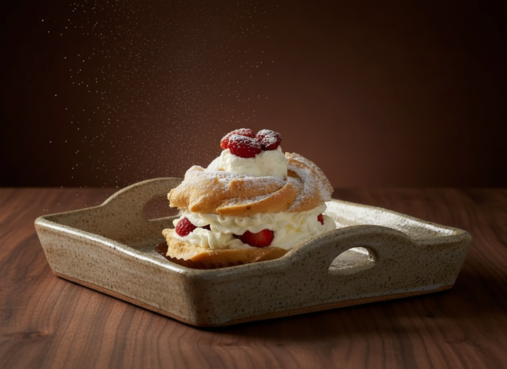

Cannoli al pistacchio · granita con brioche · cassate · martoranaSpedizioni in tutta Italia
Dal nostro laboratorio
Tutto fatto in casa, senza semilavorati, con il tempo e il rispetto che solo la vera tradizione conosce.





La nostra storia
Situata al centro di Messina, la Dolceria Delia coniuga artigianalità, qualità e gusto nel rispetto della tradizione della pasticceria messinese.
Produzione propria, nello stesso laboratorio di via Lombardo Pellegrino da trentanove anni.
Delia, a casa tua: ordina le nostre specialità e ricevile in tutta Italia · chiama per ordinare